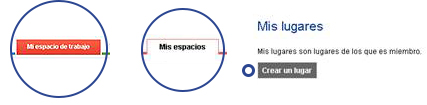

Solicita la creación de tu Repositorio de documentos en ONE y organiza tu información como prefieras.

Crea colecciones y mantén el control de tus últimas versiones de trabajo.
Elimina los archivos que ya no utilices, recuerda que cuentas con un espacio limitado.
Utiliza etiquetas en los archivos para ubicarlos más rápido.
- axa_mexico
- digital_responsabilidad_corporativa
- finanzas_estrategia seguro_responsabilidad_civil_auto